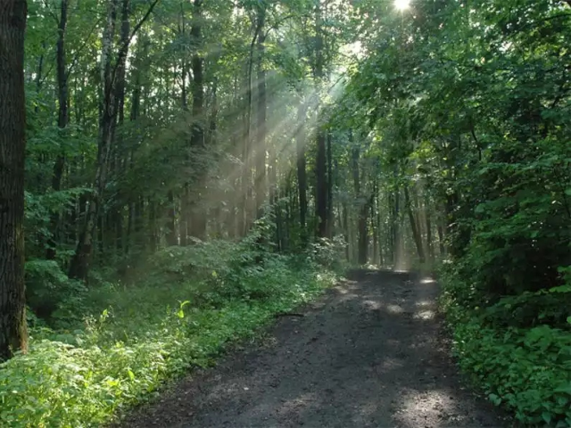
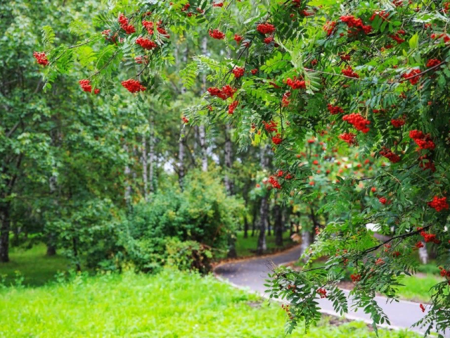

Во всём Битцевском лесопарке преобладают широколиственные насаждения. Их
площадь будет постоянно увеличиваться как результат благополучно
протекающей почти повсеместно смены мелколиственных пород на
широколиственные, такие как липа, дуб и клен. Однако это не полностью
исключает участие в составе мелколиственных пород – березы поникшей и
осины. Также можно отметить господство липы. В подлеске, не менее важном
для поддержания стабильности экосистемы, были замечены лещина,
бересклет, жимолость и рябина.
|  |  |